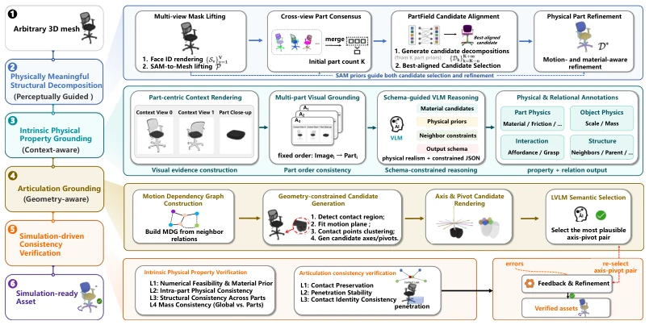
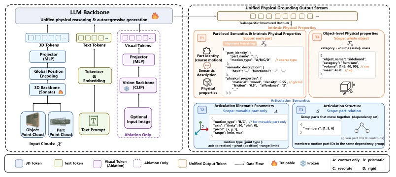
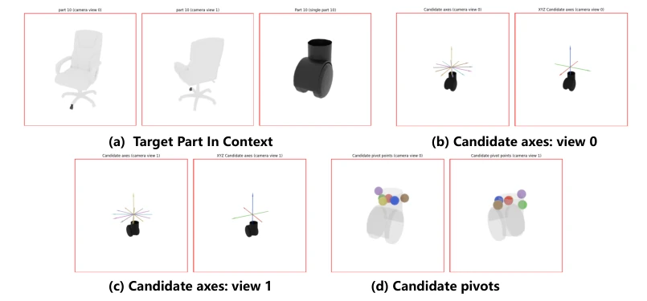
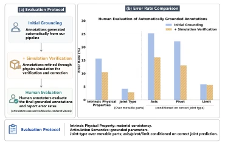
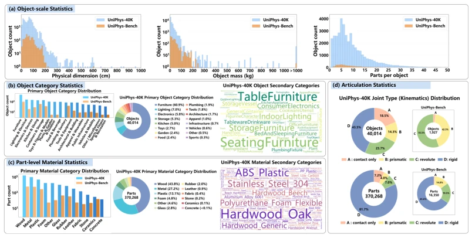
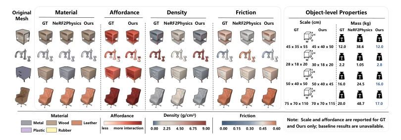
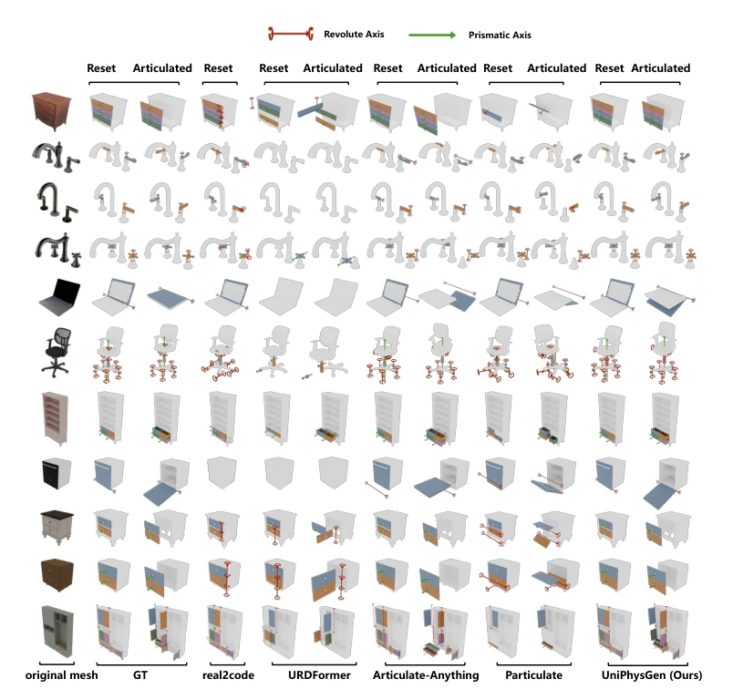

This paper finally transforms "viewable" 3D assets into "playable" simulation assets, effectively plugging a major gap in Embodied AI. UniPhysGen proposes a unified framework that jointly infers joint semantics and physical properties, performing significantly better than those models with a narrow focus that predict only joints or only materials. However, although the 40K dataset is large, much of it comes from existing libraries like Objaverse, and the manually annotated benchmark UniPhys-Bench has over 1900 items, feeling somewhat "large in scale but lacking in precision." The most ingenious aspect is the simulation verification step, which automatically filters unreliable annotations; this approach is more reliable than relying purely on model inference. However, while SO(3) augmentation solves view dependence, it results in a larger parameter space. Overall, it is a practical engineering-oriented solution, but with limited theoretical breakthroughs, suitable for direct use in simulation environment construction.
研究动机Motivation
现有 3D 资产大多只有几何和外观，缺乏仿真所需的物理语义（如关节运动学、材质密度）。Chen et al. (2024) 和 Zhao et al. (2025a) 等研究主要关注关节语义，而 Zhai et al. (2024) 和 Xu et al. (2025) 侧重物理属性，两者割裂导致仿真时物理不一致。更近期的 PhysXNet (Cao et al., 2025a) 和 PhysDB (Yang et al., 2026) 虽尝试统一，但依赖规范化的部件分解，泛化性差。现有数据集如 ShapeNet (Chang et al., 2015) 和 Objaverse (Deitke et al., 2023b) 缺乏物理标注，PartNet-Mobility (Xiang et al., 2020) 仅关注关节。因此，需要一种能自动将异构原始网格转化为统一物理语义的框架，以支持真实的机器人交互。
Existing 3D assets mostly possess only geometry and appearance, lacking physical semantics required for simulation (such as joint kinematics, material density). Research by Chen et al. (2024) and Zhao et al. (2025a) mainly focuses on joint semantics, while Zhai et al. (2024) and Xu et al. (2025) emphasize physical properties; this separation leads to physical inconsistency during simulation. More recent works like PhysXNet (Cao et al., 2025a) and PhysDB (Yang et al., 2026) attempt unification but rely on normalized part decomposition, resulting in poor generalization. Existing datasets such as ShapeNet (Chang et al., 2015) and Objaverse (Deitke et al., 2023b) lack physical annotations, while PartNet-Mobility (Xiang et al., 2020) focuses only on joints. Therefore, a framework capable of automatically converting heterogeneous raw meshes into unified physical semantics is needed to support real robot interaction.
The core is the UniPhys pipeline, divided into four steps: 1) Physical semantic decomposition: utilizing SAM segmentation priors and PartField to generate candidate decompositions, aligned via Hungarian matching; 2) Intrinsic physical property inference: based on part-centric views, using LVLM to predict material, friction, etc.; 3) Geometry-aware joint localization: generating candidate axes/pivots combining contact geometry, selected via LVLM; 4) Simulation-driven verification: checking motion consistency and physical plausibility through physics simulation. The model UniPhysGen is based on Qwen3 and Sonata, taking point clouds as input and outputting four types of semantics. Innovations include: SO(3) rotation augmentation replacing Z-axis augmentation to avoid geometric shortcuts; spherical coordinate parameterization of joint axes to eliminate directional ambiguity; unified global position encoding to improve pivot localization accuracy.

Figure 1: UniPhys: A scalable pipeline for transforming heterogeneous 3D assets into simulation- ready assets with unified articulation semantics and intrinsic physical properties.

Figure 4: Overview of UniPhysGen. The model takes 3D object and part geometry as input (Left) and generates four types of structured physical semantics (Right): part-level properties, articulation kinematics, articulation structure, and object-level properties via a unified multimodal backbone.
Figure 10: Visualization of context-preserving part-centric renderings for intrinsic physical property grounding. For each decomposed part, the target component is rendered with preserved appearance cues while the surrounding object structure is retained as contextual reference. Multi-view object observations and localized close-up views are organized into a unified part atlas, enabling the LVLM to jointly reason over material semantics, functional affordance, and global object context.

Figure 11: Visualization of the LVLM input for geometry-aware articulation grounding. For each movable part, UniPhys provides an assembly visualization, two candidate-axis views, and, for revo- lute joints, pivot-candidate views. The candidate axes and pivot points are generated from contact- aware geometric reasoning and rendered as visual-semantic hypotheses, allowing the LVLM to se- lect the physically plausible articulation configuration from a constrained candidate space.
Constructed the UniPhys-40K dataset and UniPhys-Bench benchmark (1927 objects). Compared on UniPhys-Bench against Real2Code, URDFormer, Articulate-Anything, etc. Metrics cover joint type accuracy, axis angle error, pivot distance error, and physical property estimation (density, friction, mass). UniPhysGen significantly outperforms baselines in joint structure reasoning and pivot localization, achieving 89.96% joint type accuracy. Ablation studies show that unified global position encoding reduces pivot error from 0.319 to 0.099, and SO(3) augmentation improves robustness under heterogeneous decomposition. Simulation verification (Isaac Sim) shows that generated assets support stable interactions such as drawer pulling and faucet rotation.

Figure 2: Human evaluation.

Figure 3: statistics of UniPhys-40K and UniPhys-Bench.

Figure 7: Qualitative comparison of intrinsic physical property grounding on UniPhys-Bench.

Figure 12: Additional qualitative comparisons of articulation grounding on UniPhys-Bench. “Reset” denotes the initial object state, while “Articulated” denotes the maximally articulated state.